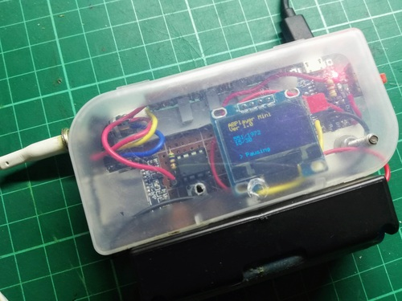
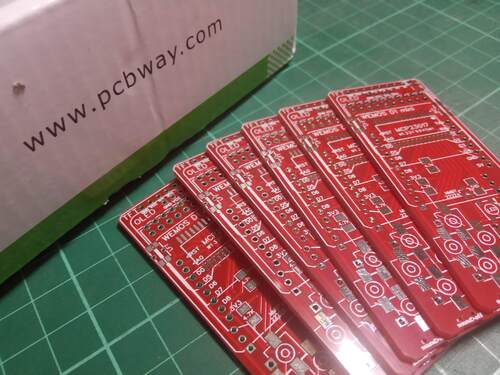

My experience with manufacturing printed circuit boards
I've done a lot of electronics projects already, all of them were painstakingly hand-soldered on a perfboard. I actually like this approach for quick prototyping, and plus, I've also grown fond of how "raw" it looks like. In spite of this, I've always been curious and interested in having my own printed PCB. I remember designing one for my TIRO vibrating watch but I never pushed through with it because I wasn't confident with what I've made.

I really like the raw, almost electronic-punk look of my work
A couple of months ago I got an email from PCBWay asking if I was interested in trying out their PCB manufacturing service. The email from PCBWay re-ignited this interest in having a PCB made. The problem is I didn't have a PCB design that I built myself that I knew was going to work. My best option was the "ESPBoy project".
The ESPBoy is a project by RomanS that is touted to be the ultimate multi-gadget. RomanS sent me a kit a long time ago (Thank's again, RomanS). I have assembled and made a tutorial video for it which means that I know that it works and have a very good idea of how it is laid out.
With that decided, having the PCB made was a very easy and quick process. I just uploaded the gerber file on the PCBWay website, waited for the review of the PCB to be finished, and in a few hours I clicked the submit button and it was off to the printers.
Fast forward a few weeks later and the package with the printed pcbs arrived.

And yes, I changed the color to red just so they would look different.
I must say that I am very impressed with the quality of the PCBs. The material feels really solid and the lines so fine and accurate. I've seen and held PCB etchings before, and this is like lightyears ahead in terms of quality. The same can be said with my hand soldered perfboards, of course.
Sadly, these PCBs have been sitting in storage because I haven't found the time due to the baby. Thankfully, my schedule is slowly opening up recently and I plan to build one ESPBoy in the next coming weeks. I plan to remove the parts from the old one and put it on this. This newer PCB design has new features like the ability to connect to an app store (yeah, seriously) and I'm really curious to try it out.
I also might consider having another PCB made, but this time with my own design. I'm thinking I might go ahead and have my TIRO watch made, or maybe something even simpler. We'll see.